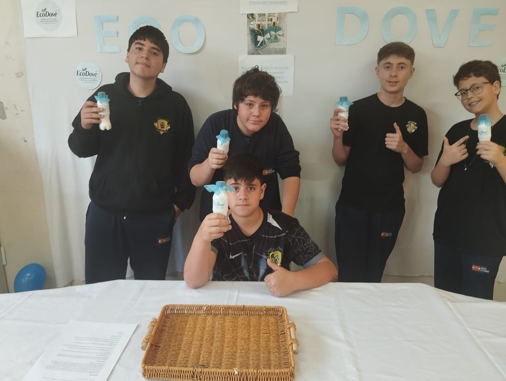
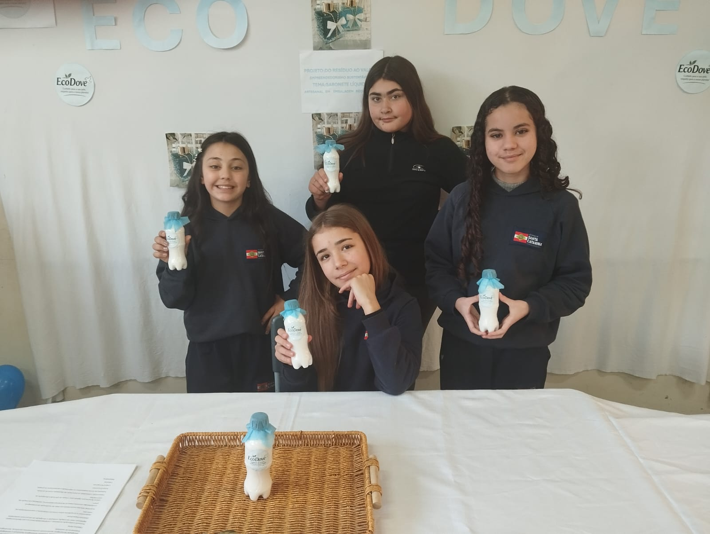
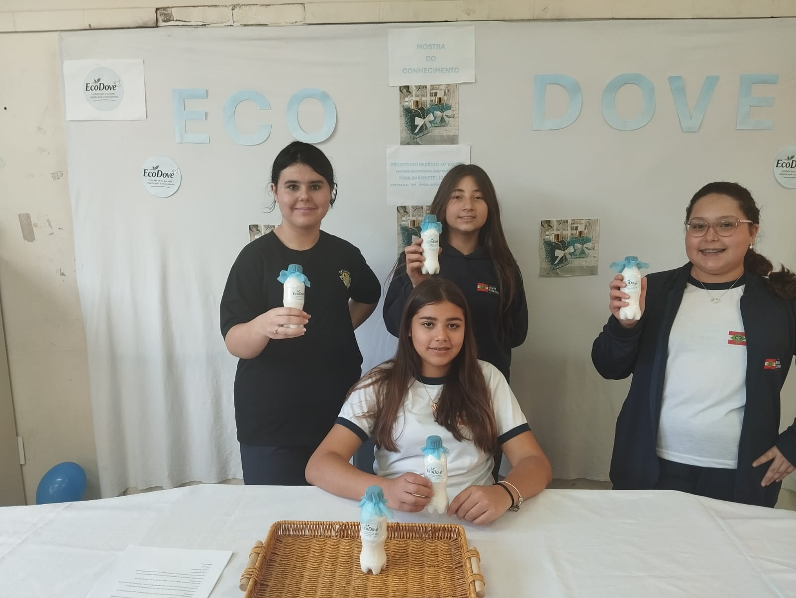

Sustentar hoje, transformar o amanhã. Este projeto mostra como uma única barra de sabão pode se transformar em vários litros de sabão líquido — reduzindo desperdício, consumo de embalagens plásticas e dando um novo ciclo de vida a um produto simples do dia a dia.
O EcoDove foi o projeto vencedor da Feira de Ciências da escola e agora segue para apresentação em [nome da feira], em [cidade].
O projeto EcoDove tem como objetivo incentivar a sustentabilidade por meio da reutilização de embalagens plásticas e da produção de sabonete líquido artesanal, mostrando que pequenas atitudes ajudam a preservar o meio ambiente.
Cada barra de sabão que reaproveitamos é menos plástico de frasco descartado, menos transporte e menos matéria-prima gasta para fabricar sabão líquido do zero. É um exemplo pequeno, mas real, de economia circular: pegar algo que já existe e fazer com que ele renda muito mais, gerando menos resíduo por litro de produto final.
Ralar o sabonete em barra, em partes bem finas, para que ele se dissolva de forma uniforme e sem grumos.
Adicionar os demais ingredientes — açúcar, glicerina líquida e água — ao sabonete ralado.
Levar ao fogo até dissolver completamente, sem deixar ferver, mexendo com cuidado.
Misturar até ficar homogêneo, sem partículas de sabão sólido restantes.
Deixar esfriar e colocar na embalagem reutilizada, fechando o ciclo de reaproveitamento.
O diferencial: de uma única barra, conseguimos render muito mais sabonete em forma líquida — sem perder o poder de limpeza e usando um processo de diluição profissional que qualquer pessoa pode reproduzir em casa.
Molhe as mãos, aplique uma pequena quantidade do sabonete, esfregue e enxágue bem.
Reutilizar em vez de descartar é o princípio por trás de tudo que a EcoDove propõe. Ao transformar uma barra de sabão comum em litros de produto líquido, reduzimos a quantidade de embalagens plásticas necessárias, damos um destino mais inteligente a sobras de sabão e mostramos, na prática, como pequenas mudanças de hábito se somam a um impacto ambiental real. No desenvolvimento do EcoDove, foram reutilizadas embalagens plásticas para envasar o produto final, o projeto incentiva o consumo consciente e mostra, com um exemplo simples, como pequenas ações ajudam a proteger o meio ambiente. Ao longo do processo, os alunos também aprenderam sobre o ciclo completo do produto — da fabricação ao descarte.



Turmas 7º ano 1, 2 e 3
Projeto desenvolvido com foco em economia circular, reaproveitamento de materiais e redução de resíduos.